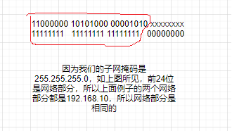
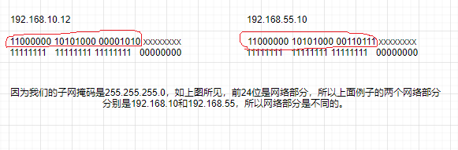

- 01 我应该站在谁的肩膀上 - OSI vs TCPIP模型.md
- 02 万丈高楼平地起- 物理层 + 数据链路层.md
- 03 OSI的灵魂就是我 - 网络层.md
- 04 要快还是要稳你说好了 - 传输层.md
- 05 是时候展现真正的技术了 - 应用层.md
- 06 重回小学课堂 - 二进制101.md
- 07 1+1 = 2吗？ - 二进制的计算.md
- 08 16进制又是个什么鬼？ - 16进制的讲解.md
- 09 我想有个家 - 什么是IP地址.md
- 10 我可是住二环的人 - IP地址的组成和分类.md
- 11 我已经没地方住了吗 - IPv6.md
- 12 向左还是向右 - IP路由.md
- 13 我能给你安全感 - TCP（一）.md
- 14 我那不为人知的秘密是什么 - TCP（二）.md
- 15 不问收没收到，就问快不快 - UDP.md
- 16 我为什么与众不同 - TCP高级篇（拥塞模型）.md
- 17 来，先看看我的家谱 - HTTP的身世.md
- 18 我都这么成功了，你却说我不行 - HTTP 的特点和缺点.md
- 19 我老了，让我儿子来吧 - HTTP2.md
- 20 稳重的大外甥 - HTTPS.md
- 21 HTTP的高级篇 - HTTPClient（Java）.md
- 22 想来我家，你自己查呀 - DNS.md
- 23 来的早，不如来得巧 - NAT.md
- 24 辛苦的邮政 - SMTP.md
- 25 你就是看不见我 - VPN.md
- 26 黑客的好帮手 - SSH.md
- 27 你可以得到我的心，却得不到我的人 - 物理安全设备.md
- 28 你怎么证明你就是你 - 身份验证和访问控制.md
- 29 我要怎么藏好我的考研资料 - 网络攻击（一）.md
- 30 我要怎么藏好我的考研资料 - 网络攻击（二）.md
- 31 如何保护我的考研资料 - 网络攻击防范.md
- 32 Linux网络安全 - 安全实战.md
- 33 结语.md
11 我已经没地方住了吗 - IPv6
IPV6的成长史
IPV6其实已经是一位80后。它生于八十年代后期，当时的工程师们已经意识到IPV4的空间正在迅速耗尽。然后到了1995年左右，IPV4进行了一次挣扎。那就是实现了子网技术（我们前面有讲过），这样就可以缓解IP地址不足和遍及全球的问题。从那时起已经过去了20多年，我们现在才刚刚开始看到IPV6在世界上的快速发展和部署。（我记得我2011年的时候想要去考CCNA，IPV6的知识设计的很少）。那么这是否意味着我们将立即转成IPV6吗？那当然是极不可能的。比如在医疗保健领域。IT的技术不是那么的先进。整个商业领域中尚不支持IPV6。因此，我们必须要找到一种折中的办法。你先去洗一下脸，清醒一下。忘记IPV6已经三十多岁了还一事无成。忘记某些领域完全不支持IPV6。我希望当你读到这篇文章的时候，内心是充满希望，是充满着对明天美好的憧憬。我们来看一下IPV6的工作原理。他本身是一个阳光帅气的中年大叔（每位大叔都是潜力股）。只是还没有完全的开花。
IPV4 vs IPV6
俗话说的话，没有对比就没有伤害，但是不对比，我们又怎么能知道两者的区别以及强弱呢。那我们就来无情的对比一下IPV4和IPV6。
IPV4
首先IPV4是32字节长，有4个八位位组。 比如192.168.0.10。转成二进制就是11000000 1010100 00000000 00001010
IPV6
IPV6呢却比IPV4要长很多。有128位。表示的方式呢，也是16进制的。比如这个例子2001:0DB8:0123:007D:0000:0000:00A5:53B5。
IPV6的话，也同样分为网络部分和主机部分。一般是前64位作为网络部分，这个不是必须的。却是极力推荐的，因为IPV6就是这么设计的。可能你会觉得这个IPV6的地址太长了，这是不是太难记了。这位80后的钻石王老五已经想到了。为了可以吸引更多的漂亮妹子。它做了一些改变。比如前缀0优化。这是什么意思呢？
比如说你现在手上有1元，那你写成01元还有001元还有0001元有区别吗？是不是都等于1元。
但是如果0在后面比如10元，100元，1000元，还等于1元吗？当然不等于是不是。所以前置的0是可以省略的。那么我们上面的IPV6地址就可以写成
2001:0DB8:0123:007D:0000:0000:00A5:53B5 全写
2001:DB8:123:7D:0:0:A5:53B5 简写 还可以写成更简写
2001:DB8:123:7D::A5:53B5
复制
这里提示一个潜在的错误，那就是：：这种简写只能用一次。比如下面这个例子就是错误的
2001:DB8:123::A5::53B5 (X) 你想一下这个为什么是错误的呢？
因为你无法判断前面和后面0的个数
2001:DB8:123:0:A5:0:0:53B5 (第一种可能)
2001:DB8:123:0:0:A5:0:53B5（第二种可能）
复制
如果你都无法判断，你怎么可能要求计算机知道哪种是你需要的呢？所以这个是要切记的点。
我们知道了IPV6的结构，那IPV6是怎么运作的呢，理论上来说和IPV4运作非常相似。如果有两台设备用电缆连接在一起。他们想要互相通信的话，这些地址的网络部分必须匹配。比如这个例子
192.168.10.10
255.255.255.0
和
192.168.10.12
255.255.255.0
复制

如果我的IPV4不具有相同的网络部分，那么这些设备就无法就行通信。比如下面这个例子。
192.168.55.10
255.255.255.0
和
192.168.10.12
255.255.255.0
复制

从这个图的红色范围里，你可以清楚的看到两个IP地址的网络部分是完全不同的。所以无法直接进行通信。除非你在中间添加一个路由器。
IPV6和IPV4的原理是相似的。如果网络部分相同，之间是可以互相通信的。比如
2001：CA7:3:B::10/64
和
2001：CA7:3:B::11/64
复制
如果我稍微的修改一下，比如下面这样，那他们就不能直接通信了。当然路由器还是可以解决问题的
2001：CA7:3:A::10/64
和
2001：CA7:3:B::11/64
复制
我们来放大我们的场景到Internet。当在Internet上进行通信时，我们需要使用的是称为IPV6的全球单播地址，用于全球通信。还需要一个链路本地地址来进行本地的通信。让我们继续向下一起来看一下IPV6的地址类型。
IPV6的地址类型
- 单播地址
- 全球单播地址
- 链路本地地址 - 用于本地的通信。格式必须是FE80::/10
- 环回地址 - ::1⁄128 (还记得IPV4的环回地址是多少吗127.0.0.1)
- 未指定地址 ::/128
- 唯一本地地址 FC00::/7, 这个地址是不可以和公共网络进行交流的，这点和IPV4不同，IPV4的话，即使是私有地址，通过NAT还是可以和公网通信。但是在IPV6中，却无法左到这一点。所以这个唯一本地地址对你做实验和练习的时候比较有用，但是不适合设置你的网络环境来和公网通信。
- 组播地址
- 一对多的通信。主要用于企业内部
- 任播地址
- 一个IPV6地址赋给多态机器（Wait a Sec。这时候你是不是会有疑惑，这样是不是违规了？你的猜测是正确的，那你开动脑瓜想一想，有什么场景可以这么使用）–> 负载均衡（Load Balancing）
IPV6的地址数量
你是不是会有一个疑问？就是我们之所以使用IPV6就是因为IPV4的地址太少了，快被用完了，所以才有了IPV6，那么IPV6有多少地址呢？我可以负责任的告诉你，很多很多。真的是太难以计算了，我们来看一个单一的网络地址吧。比如网络部分已经确定了，然后只考虑主机部分的64位。就是说一个确定的IPV6网络地址上有多少个主机地址可以分配，就是2的64次方，计算出来是18,446,744,073,709,600,000。我已经不知道这个数字怎么念出来了，所以就给你一个“准确的”数字，那就是很多很多。你觉得IPV6会用尽吗？我只能说世事无绝对，但是基本上我们这一代是不用操心这个问题了。估计你不需要学习IPV8了。
© 2019 - 2023 Liangliang Lee. Powered by gin and hexo-theme-book.